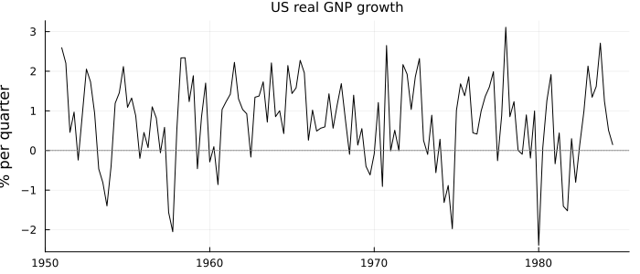
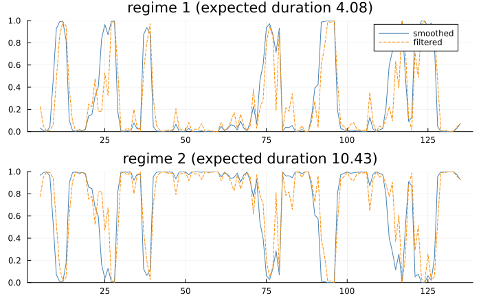
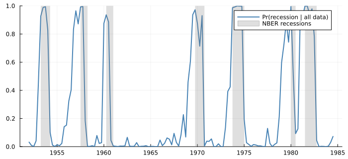
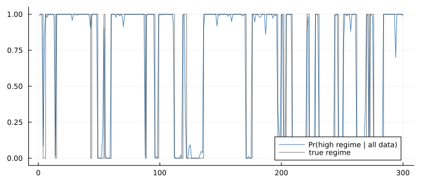
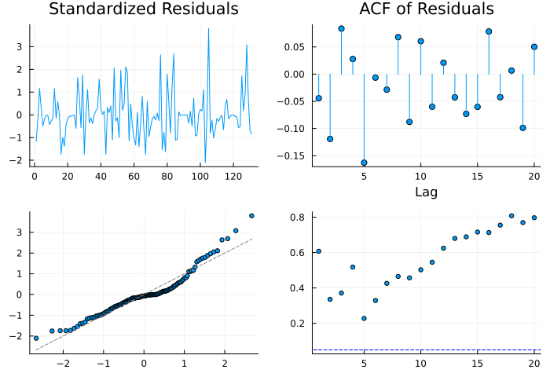

The Economy Has Two Moods
using TSAnalytics, Plots, DelimitedFiles, Statistics, Random
raw = readdlm(TSAnalytics.HAMILTON_GNP, ',', skipstart = 1)
quarters = String.(raw[:, 1]); gnp = Float64.(raw[:, 2])
qnum(s) = parse(Int, s[1:4]) + (parse(Int, s[6]) - 1) / 4
tq = qnum.(quarters)
println(length(gnp), " quarters of US real GNP growth, ", first(quarters), " to ", last(quarters),
"; mean ", round(mean(gnp), digits = 2), "%, sd ", round(std(gnp), digits = 2))135 quarters of US real GNP growth, 1951Q1 to 1984Q3; mean 0.74%, sd 1.07plot(tq, gnp; color = :black, label = "", ylabel = "% per quarter", size = (700, 300),
title = "US real GNP growth", titlefontsize = 10)
hline!([0]; color = :gray, linestyle = :dot, label = "")
Every model so far has had one set of parameters for the whole sample. The GNP series suggests that is too few: most quarters it grows at about one per cent, and every few years it falls for a while — not a smaller growth rate, a different behaviour. Hamilton (1989) proposed that the economy switches between two regimes, expansion and recession, that the regime is never observed, and that it follows a Markov chain whose transition probabilities can be estimated with everything else. It is the most cited idea in empirical macroeconomics of its decade, and this chapter fits it.
P[i, j] = Pr(S_t = i | S_{t−1} = j), so each column sums to one. That is Hamilton's convention (1994, printed p. 678, PDF 693), and statsmodels'. Shumway & Stoffer (2017, Property 6.7) write the transpose, rows summing to one. Mixing them gives a model that runs and is wrong.
The model
The growth rate is an AR(4) around a mean that depends on the regime:
\[y_t - \mu_{S_t} = \sum_{j=1}^{4} \phi_j (y_{t-j} - \mu_{S_{t-j}}) + \varepsilon_t, \qquad \varepsilon_t \sim N(0, \sigma^2), \qquad S_t \in \{1, 2\}\]
The lags are taken around their own regimes' means, so the distribution of y_t depends on S_t, …, S_{t−4}: thirty-two combinations, each with a probability. The Hamilton filter carries those probabilities forward one quarter at a time — predict them with P, weight each by how likely it makes the new observation, renormalise — and the sum of the normalising constants is the likelihood. Hamilton (1994, §22.4) derives it, and the 32-state expansion for exactly this model is on printed p. 698 (PDF 713). The Kim smoother then runs backwards to give Pr(S_t | all data).
Fitting it
m = canonicalise(fit_ms_autoregression(gnp, 4))Markov-switching autoregression, order 4 (mean-adjusted), 2 regimes, nobs = 131
p[0->0] 0.75467096
p[1->0] 0.095915326
const[0] -0.3588127
const[1] 1.1635166
sigma2 0.59136839
ar.L1 0.013487098
ar.L2 -0.057521162
ar.L3 -0.24698328
ar.L4 -0.21292139
expected durations: [4.0762, 10.4259]
log-likelihood = -181.2634 AIC = 380.5268 BIC = 406.4036
optimiser converged; 2 distinct optima found across the starts (-181.2634, -183.6692)Hamilton's Table 22.1 (1994, printed p. 698, PDF 713) reports the same model, to two decimals:
| this fit | Hamilton | |
|---|---|---|
| mean, recession | −0.359 | −0.36 |
| mean, expansion | 1.164 | 1.16 |
σ² | 0.591 | 0.59 |
φ₁ … φ₄ | 0.013, −0.058, −0.247, −0.213 | 0.01, −0.06, −0.25, −0.21 |
| stay in expansion | 0.904 | 0.90 |
| stay in recession | 0.755 | 0.75 |
Every figure agrees. Two cautions in reading his table: he numbers expansion as state 1, the reverse of canonicalise, which puts the low-mean regime first; and he prints no log-likelihood, so the −181.26339 above is corroborated by statsmodels (to 8.5e-14) and E-Views, not by the book.
The last line of the display says the restarts found two optima. The other, at −183.67, is a solution with almost no persistence — regimes that flip every quarter — and a gradient method started near it stays there. fit_ms_autoregression runs several starts on threads and reports every distinct optimum it reached, because a switching model's likelihood is reliably multimodal and a single run cannot know which one it found.
What the regimes mean
println("expected duration of a recession: ", round(expected_durations(m)[1], digits = 2),
" quarters; of an expansion: ", round(expected_durations(m)[2], digits = 2))expected duration of a recession: 4.08 quarters; of an expansion: 10.431/(1 − P[i,i]): recessions last about a year, expansions about two and a half. The recession regime's mean of −0.36% a quarter is a contraction, not slow growth — the model has found two different economies, not two speeds of one.
Reading the regime
The filter answers "given what was known that quarter, how likely was recession?"; the smoother answers it with hindsight:
plot(regime_plot(m); size = (700, 440))
The dashed filtered line flickers where the smoothed one is confident: a single weak quarter raises the real-time probability, and only the quarters after it decide whether it was the start of a recession. That is the practical limit of a regime model as a real-time recession signal, and it is visible here without any further analysis.
Hamilton's Figure 22.4 compares the smoothed probability with the recessions dated by the National Bureau of Economic Research. Redrawn from our own fit, with the NBER peak-to-trough periods shaded:
nber = [(1953.25, 1954.25), (1957.5, 1958.25), (1960.25, 1961.0), (1969.75, 1970.75),
(1973.75, 1975.0), (1980.0, 1980.5), (1981.5, 1982.75)]
p = regime_probabilities(m)[:, 1]
t5 = tq[5:end]
inrec = [any(a < x <= b for (a, b) in nber) for x in t5]
println("NBER recession quarters in the sample: ", count(inrec),
"; given Pr(recession) > 0.5 by the model: ", count(inrec .& (p .> 0.5)))
println("quarters the model puts in recession: ", count(p .> 0.5),
"; of which NBER recession quarters: ", count(inrec .& (p .> 0.5)))
for (a, b) in nber
i = findall(x -> a < x <= b, t5)
println("NBER recession ending ", b, ": highest Pr(recession) ", round(maximum(p[i]), digits = 2))
endNBER recession quarters in the sample: 26; given Pr(recession) > 0.5 by the model: 17
quarters the model puts in recession: 36; of which NBER recession quarters: 17
NBER recession ending 1954.25: highest Pr(recession) 0.99
NBER recession ending 1958.25: highest Pr(recession) 1.0
NBER recession ending 1961.0: highest Pr(recession) 0.89
NBER recession ending 1970.75: highest Pr(recession) 0.93
NBER recession ending 1975.0: highest Pr(recession) 1.0
NBER recession ending 1980.5: highest Pr(recession) 0.51
NBER recession ending 1982.75: highest Pr(recession) 1.0plot(t5, p; color = :steelblue, linewidth = 2, label = "Pr(recession | all data)",
size = (700, 320), ylims = (0, 1), legend = :topright)
vspan!(collect(Iterators.flatten(nber)); color = :gray, alpha = 0.25, label = "NBER recessions")
Every NBER recession has a spike, and all but the brief 1980 recession take the probability above 0.89. The counts say the match is not exact, and the direction of the mismatch is informative: most of the quarters the model calls recession and the NBER does not are the quarters just before an NBER peak. The model reads one series, GNP, and dates a downturn from when growth turns negative; the NBER weighs many indicators and dates the peak of activity. That one series recovers the NBER chronology this closely is the result that made the paper.
Recovering a known switching process
A regime model can find regimes that are not there. The check is to simulate from a known chain and see what comes back:
rng = MersenneTwister(55)
n = 300
Ptrue = [0.9 0.2; 0.1 0.8] # regime 1: mean +1, stays 90%; regime 2: mean −1, stays 80%
μtrue = [1.0, -1.0]
S = zeros(Int, n); S[1] = 1
for t in 2:n
S[t] = rand(rng) < Ptrue[1, S[t - 1]] ? 1 : 2
end
ysim = μtrue[S] .+ 0.6 .* randn(rng, n)
r = canonicalise(fit_ms_regression(ysim))
println("estimated P (low regime first): ", round.(r.P, digits = 3), " truth: [0.8 0.1; 0.2 0.9]")
ps = regime_probabilities(r)[:, 2]
println("periods classified correctly: ", round(100mean((ps .> 0.5) .== (S .== 1)), digits = 1), "%")estimated P (low regime first): [0.802 0.095; 0.198 0.905] truth: [0.8 0.1; 0.2 0.9]
periods classified correctly: 99.0%plot(1:n, ps; color = :steelblue, label = "Pr(high regime | all data)", size = (700, 300),
ylims = (-0.05, 1.05), legend = :bottomright)
plot!(1:n, S .== 1; seriestype = :steppost, color = :black, alpha = 0.5, label = "true regime")
The persistences come back to within a couple of hundredths and the regimes are classified almost without error — with means two standard deviations apart, the regimes are easy to tell apart. Narrow that gap and the probabilities hover near one half; the method does not fail, it says it cannot tell.
Per-regime diagnostics
A switching model's residual depends on which regime a period was in. diagnostic_plot(m; regime = r) weights each residual by the probability of regime r, so the expansion's residuals can be read on their own:
d2 = diagnostic_plot(m; regime = 2)
lb = ljungbox_test(d2.std_resid, collect(1:8))
big = findall(abs.(d2.std_resid) .> 2.5)
println("Ljung-Box, 8 lags: p = ", round(lb.pvalue, digits = 3))
println("standardised residuals beyond ±2.5: ", quarters[5:end][big])Ljung-Box, 8 lags: p = 0.465
standardised residuals beyond ±2.5: ["1970Q4", "1972Q4", "1978Q1", "1983Q4"]plot(d2; size = (700, 480))
The expansion regime's residuals pass a Ljung-Box test comfortably, and its handful of large ones fall in quarters the model is sure were expansions — single strong or weak quarters, not misclassified ones.
R's MSwM stores the negative log-likelihood in its logLikel slot, and under its default parallel restarts it is not reproducible: three runs with one seed gave −183.58332, −183.66895 and −183.66916. Its msmFit on a regression with lagged y is also not Hamilton's model, because the lags are not taken around the regime means, so its likelihood is not comparable with the one above. statsmodels reproduces Hamilton, but returns its starting values untouched for the transition probabilities of a model in which nothing switches, without a warning. This package refuses that model.
The filter runs in log space over all 2⁵ = 32 regime histories, with an index map from a history to its predecessors and successors built once and tested on its own. An earlier version of the parameter unpacking used a closure that advanced a captured index — which Julia boxes, making every field type-unstable: a default fit took 10.8 seconds and 12 GB. Rewritten with explicit offsets it takes 2.65 seconds and 1.6 GB. The same trap, in threaded code, gives wrong answers instead of slow ones (Chapter 52).
Summary
- A Markov-switching model lets parameters jump between unobserved regimes that follow a Markov chain with estimated transitions.
- Hamilton's model of US GNP is reproduced to every figure of his Table 22.1, and its smoothed recession probability tracks the NBER chronology from one series.
- The likelihood is multimodal; fit from several starts and look at how many optima were found.
- Filtered probabilities flicker in real time; the smoothed ones need the future.
See also
- Manual: Regime Switching
- Chapter 56 — regimes set by an observed variable
- Chapter 34 — the continuous-state filter this one parallels